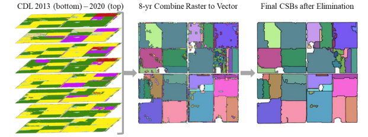

Crop Sequence Boundaries
For effective simulations using the EPIC model, it is essential to have land units that are characterized by uniform soil properties and consistent management practices. One way to achieve this for the USA is by utilizing the Crop Sequence Boundaries (CSB) dataset. The CSB dataset is derived by analyzing annual variations in the USDA's Cropland Data Layer (CDL). The CSB method involves identifying and demarcating the boundaries of agricultural fields that have maintained consistent crop rotation sequence over several years.

Crop Sequence Boundaries (CSB): Delineated Fields Using Remotely Sensed Crop Rotations. USDA-NASS & Global Conservation Institute. Hunt, K. A., Abernethy, J., Beeson, P., Bowman, M., Wallander, S., & Williams, R.
Obtaining the CSB dataset
Visit the following URL: https://www.nass.usda.gov/Research_and_Science/Crop-Sequence-Boundaries/index.php to download the 'Crop Sequence Boundaries 2016-2023' dataset. After downloading, extract the dataset, which includes crop-field shapes for the entire USA. You can then use crop_csb tool to clip it to fit your Area of Interest (AOI). If your study focuses on Maryland, clip the shapefile for Maryland and save it.
Clipping the CSB file to your Area of Interest
Geo-Epic comes with a command-line tool to filter and clip the CSB file for your specific region of interest. The tool can be invoked with various options to specify the region:
# Help with the options provided by the tool
>> geo-epic crop_csb -h
# Cropping the csb to get the shapefile for Maryland:
>> geo-epic crop_csb path/to/input.gdb output.shp --state_name "Maryland"
# Using the state FIPS code (24) for Maryland:
>> geo-epic crop_csb path/to/input.gdb output.shp --state_fips "24"
# To get the shapefile for Montgomery County, Maryland:
>> geo-epic crop_csb path/to/input.gdb output.shp --county_name "Montgomery, Maryland"
# Cropping the CSB using a bounding box:
>> geo-epic crop_csb path/to/input.gdb output.shp --bbox "-77.5,38.0,-76.0,39.5"
# Cropping the csb around a center point with a specified extent in km:
>> geo-epic crop_csb path/to/input.gdb output.shp --center "39.0,-77.0" --extent "50x50"
Note: For countries other than USA, a geo-tiff file covering the region of interest with one channel being the cultivated crop land mask of that region and another channel containing corresponding management info ID can be used to utilize Geo-Epic.